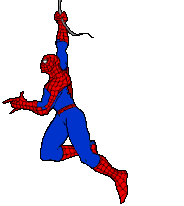

Porém, uma noite Peter não prendeu um ladrão após vê-lo
cometer um crime, pois não considerava aquilo sua responsabilidade. Pouco tempo depois, o mesmo
ladrão matou o tio de Peter e, após prendê-lo, o rapaz jurou combater o crime e defender os
inocentes como o espetacular Homem-Aranha ao perceber que “grandes poderes trazem grandes responsablidades”.
